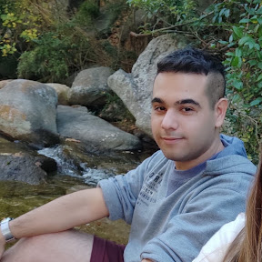

<body>
	
	<div class="container-fluid">
			
			<div class="main-content-wrapper">
				<div class="container-fluid">
					<div class="top-bar text-center position-relative">
						<div class="top-bar-inner">
							
							<!--<a class="btn btn-primary top-bar-cta" href="https://themes.3rdwavemedia.com/bootstrap-templates/resume/risen-free-bootstrap-5-dark-mode-resume-cv-template-for-developers/">Hire Me</a>-->
					
							<ul class="social-list list-inline mx-auto">

								<li class="list-inline-item me-0 me-md-1 me-lg-2"><a target="_blank" href="https://github.com/pacugliari"><i class="fa-brands fa-github fa-fw"></i></a></li>
							
								<li class="list-inline-item me-0 me-md-1 me-lg-2"><a target="_blank" href="https://www.linkedin.com/in/pablo-alberto-cugliari-b092b9269/"><i class="fa-brands fa-linkedin-in fa-fw"></i></a></li>
								
								
							</ul><!--//social-list-->
							
						</div><!--//top-bar-inner-->
						
					</div><!--//top-bar-->
			
					<div class="resume-wrapper mx-auto rounded-2">
						<div class="resume-header px-4 px-lg-5">
							<div class="resume-profile-holder text-center">
								
								
								<h2 class="resume-name text-uppercase">Pablo Alberto Cugliari </h2>
								<div class="resume-role-title text-uppercase">LABORATORIO IV-SALA DE JUEGOS</div>
								<div class="resume-contact mt-4">
									<ul class="resume-contact-list list-unstyled list-inline mb-0 justify-content-between">
										<li class="list-inline-item me-md-3 me-lg-5"><i class="resume-contact-icon bi bi-envelope me-2"></i> pacugliari@gmail.com</li>
									</ul>
								</div><!--//resume-contact-->
							</div><!--//profile-holder-->
						</div><!--//resume-header-->
						
						<div class="resume-body p-4 p-lg-5">
							<div class="row">
								<div class="col-main col-12 col-lg-6 pe-lg-4">
									<section class="resume-summary-section resume-section">
										<h3 class="resume-section-heading text-uppercase py-2 py-lg-3 py-2 py-lg-3"><i class="resume-section-heading-icon bi bi-person me-2"></i>Acerca de mi</h3>
										<div class="resume-summary-desc">
                                            Soy estudiante en la UTN-FRA, cursando la carrera de Técnico Universitario en Programación. Este proyecto corresponde a la asignatura Laboratorio IV y tiene como objetivo la creación de una sala de juegos para aplicar nuevos conocimientos. Para su desarrollo, he utilizado Angular y Firebase.
										</div>
									</section><!--//resume-section-->
									

								</div><!--//col-8-->
								<div class="col-12 col-lg-6 ps-lg-4">
									
							
									
									<section class="resume-summary-section resume-section">
										<h3 class="resume-section-heading text-uppercase py-2 py-lg-3 py-2 py-lg-3"><i class="resume-section-heading-icon bi bi-dpad me-2"></i>Juegos</h3>
										<div class="resume-summary-desc">
											La sala de juegos consta de los juegos Ahorcado, Mayor o Menor, Preguntados y un juego propio,este juego de atrapa la fruta consiste en juntar la mayor cantidad de frutas que van cayendo sin dejar que se te pase ninguna.
										</div>
									</section><!--//resume-section-->
									
									
									
								</div><!--//col-side-->
							</div><!--//row-->
					    </div><!--//resume-body-->
				    </div><!--//resume-wrapper-->
				</div><!--//container-fluid-->
			</div><!--//main-content-wrapper-->	
	
	</div><!--//container-->
</body>
